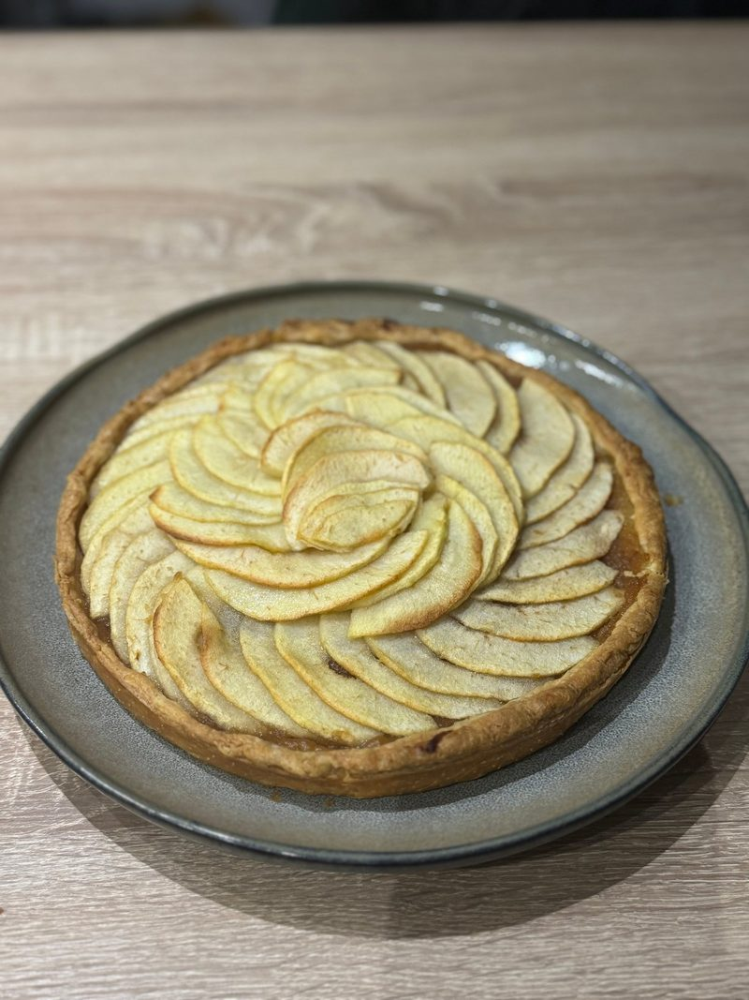
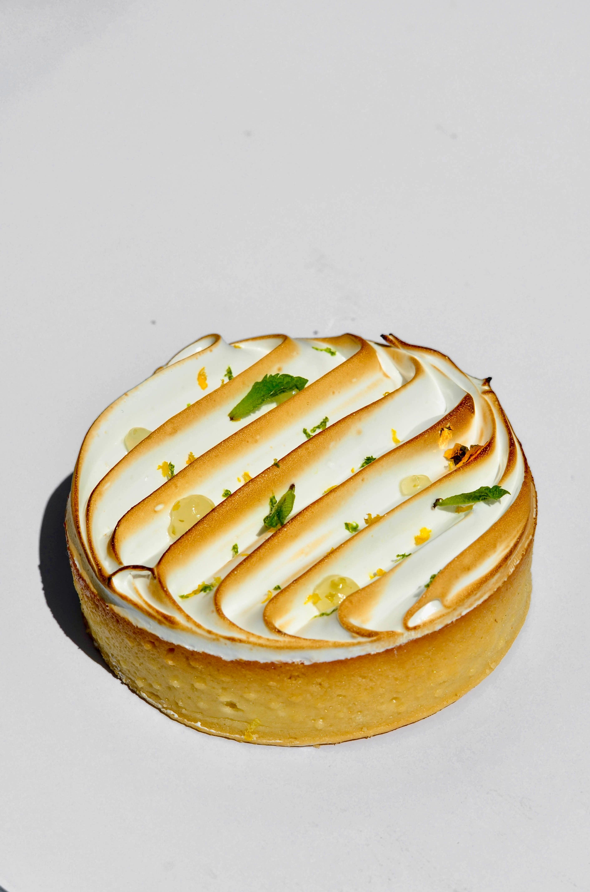
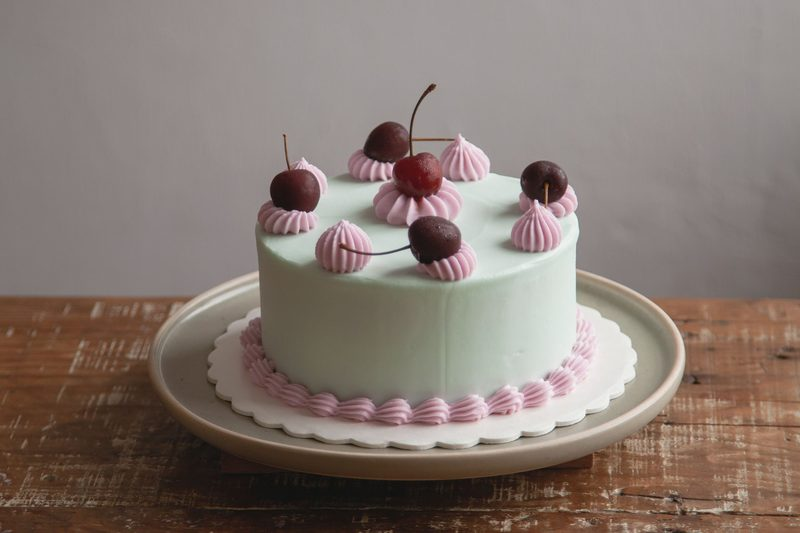

Tarta de manzana

Descubre recetas deliciosas y sencillas para preparar en casa si buscas información sobre repostería casera o algo más específico puedes consultar nuestras secciones dedicadas a cada tema.
Somos Dulce Tentación, una tienda especializada en repostería casera, donde encontrarás una amplia variedad de productos elaborados con dedicación y cariño. Nuestro objetivo es ofrecer dulces deliciosos que puedan disfrutarse en cualquier ocasión, desde una pequeña merienda hasta una celebración especial. Contamos con diferentes opciones de repostería, como tartas, brownies, galletas y bizcochos, pensadas para satisfacer los gustos de nuestros clientes.
Para elaborar nuestros productos, seleccionamos ingredientes de calidad y seguimos recetas tradicionales que hemos ido perfeccionando a lo largo de los años. Creemos que el secreto de una buena repostería está en cuidar cada detalle, desde la elección de los ingredientes hasta la presentación final. Por eso, buscamos mantener ese sabor casero que caracteriza a los postres preparados de manera artesanal, sin dejar de experimentar con nuevas combinaciones y sabores.
Además, queremos que disfrutar de nuestros dulces sea lo más sencillo y cómodo posible. Por ello, ofrecemos un servicio de entrega a domicilio, para que puedas recibir nuestros productos directamente en tu hogar. Ya sea para darte un capricho, compartir un momento especial con familiares y amigos o sorprender a alguien con un detalle dulce, en Dulce Tentación encontrarás diferentes opciones para cada ocasión.

enseñamos cómo preparar deliciosos postres en casa como los siguientes:
¿Tienes curiosidad por conocer alguna de nuestras recetas? Descubre cómo preparar deliciosos postres en casa como los siguientes:


¿Por qué elegir la repostería casera?
Pues nosotros te ofrecemos...
y muchas más ventajas que descubrirás al preparar postres en casa.
